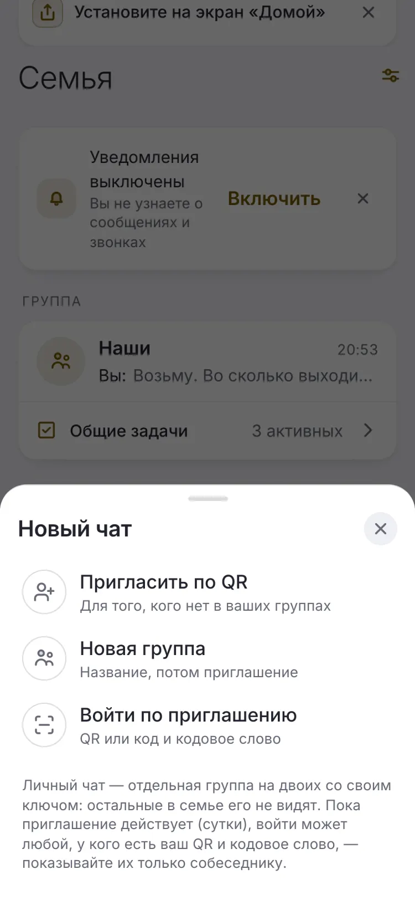
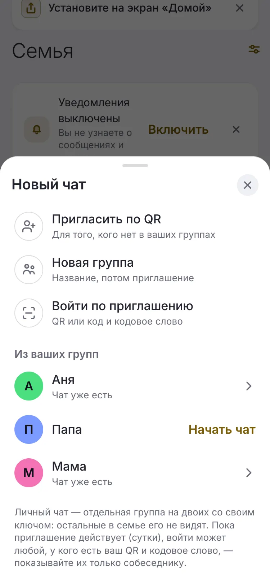
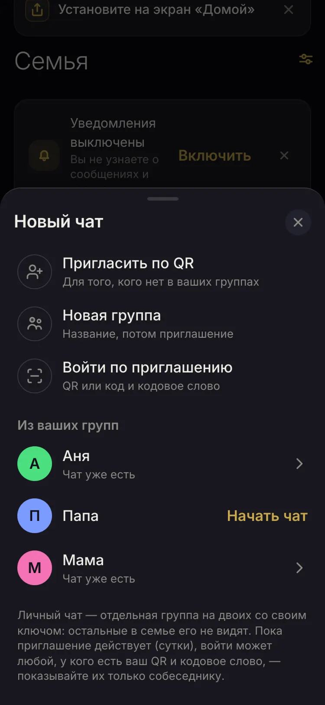

Б — три действия сверху
Звать из групп некого — светлая
Три пути одним списком, без заголовков

Звать из групп некого — тёмная
Шторка ниже, чем в А: нет «Личный чат» и «Ещё»
Люди в группах есть — светлая
Люди групп — под «Из ваших групп», на три строки ниже

Люди в группах есть — тёмная
При пяти-шести людях «Начать чат» уходит под край шторки
